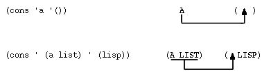

Contents | Lists, CAR and CDR | Atoms and Values
Let's first play with the CONS function.
:(CONS 'A '(B C)) (A B C) :(CONS '(A) '(B C)) ((A) B C) :(CONS '() '(B C)) (NIL B C) :(CONS '(B C) '()) ((B C)) :(CONS '(A B) '(C D)) ((A B) C D) :(CONS 'BACON '((LETTUCE) ((GAZELLE)))) (BACON (LETTUCE) ((GAZELLE))) :(CONS 'BACON '()) (BACON)The explanation of CONS is a little tricky, so hang on. CONS takes its first argument [which may be either an atom or a list] and inserts it just after the first left parenthesis in the second argument. This second argument should be a list. CONS will actually connect things onto atoms as: "(cons 'a 'b)", but this creates a special form of list called a dotted pair. Don't worry about dotted pairs for now; Lisp will print them, but they are not used very often, nor are they very important.
If you have a list of atoms, then you can use CONS to add another atom on the front of the list [as in the first example]. You can see that if we try to add an empty list [NIL or ()] to the front of the list, CONS will do it. If we try to add a list onto the front of a "()", then the "()" is treated as a list [just a set of balanced parentheses].
Here is a visualization of exactly what CONS will try to do:

CONS is very important. You should make sure that you throughly understand how it works before proceeding.Good. Well, the next magical function is called CONC. Again, let's just play around with CONC before discussing it.
:(CONC '(IMA LIST) '(URA LIST)) (IMA LIST URA LIST ) :(CONC '((NUMBER ONE)) '(((NUMBER TWO)))) ((NUMBER ONE ) ((NUMBER TWO ) ) ) :(CONC '(READY SET GO) '()) (READY SET GO ) :(CONC '() '(GO SET DOWN)) (GO SET DOWN) :(CONC '() '()) NILWhat does CONC do? [Can you answer that question now?] The CONC function joins two lists by sticking the first one onto the front of the second one and then removing one, and only one, pair of ")(" from the middle. CONCing "(a)" with "(b)" will first form "(a)(b)". You then remove the ")(" from the middle and you are left with the result "(a b)". Note that putting the lists together does not join "a" and "b". In other words, you don't get "(ab)". Both the arguments to and the result of a CONC are lists. The following shows what happens when you try to CONC atoms.
:(CONC 'A '(B C))
** ERROR: BAD LIST ARG **
CONC :: ((QUOTE A ) (QUOTE (B C ) )
)
+()
NIL
:(CON '(B C) 'A)
** ERROR: BAD LIST ARG **
CONC :: ((QUOTE (B C ) ) (QUOTE A )
)
+()
NIL
Moral of the story: CONS can deal with atoms, CONC can't. CONS is
the opposite of a CAR and a CDR.
:(cons (car ' (i wanna go home)) (cdr '(i wanna go home))) (i wanna go home)Amazing! We took a list apart using CAR and CDR and then turned right around and put the list back together with CONS! Make sure you understand what is going on in the above example, and be sure you can account for all the parentheses. Let's try using a CONC and a CDR for the CONS and the CAR. Note that we do not get back the list we started with:
:(conc (cdr ' (humpty dumpty)) (cdr ' (humpty dumpty))) (dumpty dumpty)Using two CDR's we cannot put "(humpty dumpty)" back together again. This shouldn't be much of a surprise since we threw out the CAR of the list.
A quick note on the structure of lists: if a list contains another list as an element, then the inner list is said to be nested in the outer one. Also, it is often necessary to discuss top-level elements and levels of nesting. Here is a list with its top-level elements numbered:
(aka (googoo dada) waka) ---- ------------- ----- 1 2 3Thus, there are 3 top level elements. The atoms "googoo" and "dada" are said to be more deeply nested: they are not on the top level.
What good are lists? Why would you want to use these CAR'S, CDR's, CONS's and CONC's on lists? Answer: We can use lists to store data and the list provides us with a very flexible data structure. Let's spend some time investigating how lists can represent different kinds of things.
Suppose you have a bunch of friends and their phone numbers and you want to organize them. What is the important concept here? Each person will usually have just one phone number associated with him/her. Let's represent the pair (person, number) as a two element list: (person number). Your phone book then becomes a list of two element lists. It might look like this:
((bill 1234567) (simon 5551212) (jane 2019999))As a numerical example of data structure, consider a polynomial: 12(x+2)+17.
How can we represent this in Lisp? There are lots of ways. We might use the built-in Lisp functions for arithmetic operations to form an equivalent expression. The above polynomial is represented as
(ADD (MULT 12 (ADD x 2) ) 17)We are going to return to polynomials of this type in later chapters and show you how to manipulate them in meaningful ways. Before that, however, we are going to have to see some more of the Lisp language.
((BILL 1234567) (SIMON 5551212) (JANE 2019999))An expression to reverse this list is
(CONS (CADDR L) (CONS (CADR L) (CONS (CAR L) '())))
(CONS
(CONS (CADR (CADDR L)) (CONS (CAR (CADDRL)) '()))
(CONS
(CONS (CADR (CADR L)) (CONS (CAR (CADR L)) '()))
(CONS
(CONS (CADR (CAR L)) (CONS (CAR (CAR L)) '()))
'())
)
)